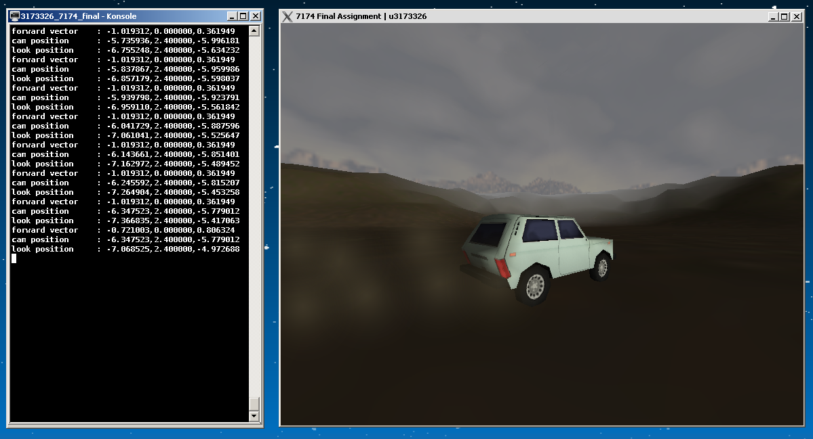

My Demos
Below is an application I created during my last semester at UC for a team of Microbiologists at the ACTGAL. The application connects to a MySQL database, and allows the user to filter and sort Sample data as well as perform CRUD operations. It uses Qt5, which comes with SQL drivers and models. The application is multiplatform.

Here is another assignment from my last semester at UC. This one is an OpenGL program -- and although it doesn't have any shaders, it does have quaternion camera rotation. Dust particle effects are visible behind the 4WD (which is moving). All art assets were created by me over the span of several hours.
